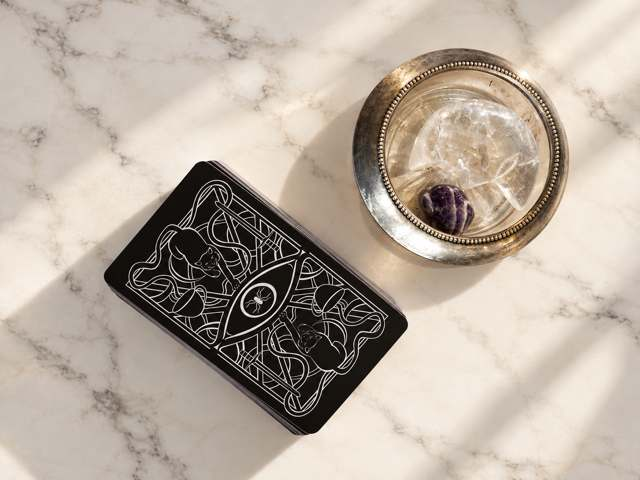

The Midnight Draw | Southern California Events
Corporate Tarot Experiences
Bring an unexpected touch of magic to your next event. The Midnight Draw offers engaging tarot reading experiences for employee celebrations, company parties and brand activations.
Serving Los Angeles and surrounding Southern California communities.
Book Your Event
A personal moment within your company event
Give employees and guests a welcoming place to pause for an individual tarot reading. Conversations focus on reflection and connection, making the experience approachable for first time guests and tarot enthusiasts alike.
Readings that fit your schedule
Short event readings can take approximately five minutes per guest. We discuss your service hours, expected participation and guest flow before confirming coverage. Reading capacity depends on the format, transitions and number of readers.
Planning for larger gatherings
Share both your total guest count and how many people you hope will receive a reading. For larger events, we can explore additional reader options, with staffing and availability confirmed in your quote.
A setup that fits your venue
A dedicated reading table creates a clear place for guests to join the experience. Before the event, we discuss the reading space, table and chair setup, arrival access and your theme so the station fits naturally into your celebration.
Company parties, employee appreciation and brand activations
Whether guests join between activities or during a dedicated entertainment window, we plan the reading experience around your event schedule. Travel and coverage are confirmed with your personalized quote.
How to inquire
Share your event date, location, guest count and desired reading hours. Once availability and a quote are confirmed, a 50% nonrefundable deposit secures your booking. The remaining balance is due upon arrival on the event day.
Book Your Event